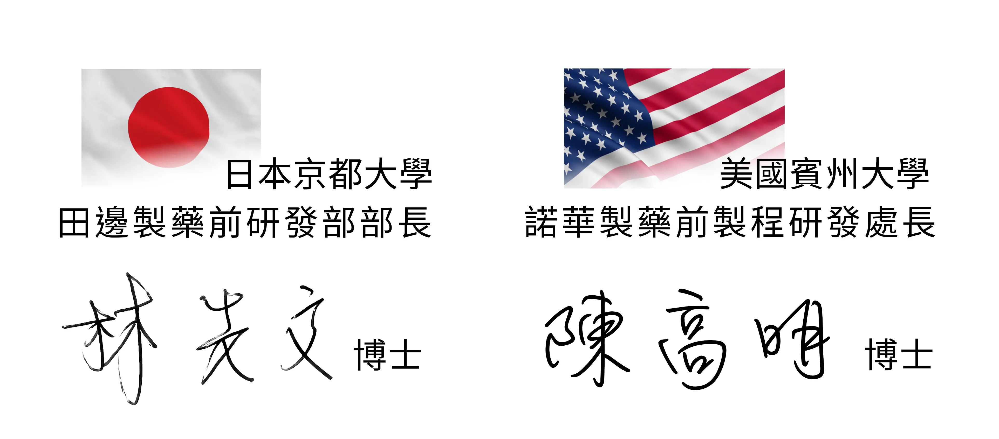

素顏美才是美
追求「美麗、自然、健康」，從根本做起
養成肌膚的健康
是自然、美麗的唯一方法。
為肌膚素顏美提供高效、安心的保養選擇，
我們投入國際級製藥廠研發背景的專家科研，精選豐富優質成分
以「自然養護」為養顏哲學
per-sulii 沛素 ... 從此誕生
自然修護的
精準科研
沛素產品的研發理念，是將「自然養護肌膚，落實在生活中」，結合擁有「國際級製藥廠研發背景領域專家」，精準研發出天然多胜肽科研配方，喚醒人體肌膚的「自我養護機制」，啟動肌膚的自然養護模式。
「per-sulii 沛素」系列產品將天然成分製成微小分子，能高效穿透肌膚底層，有效吸收。讓肌膚自然展現出「健康、透亮、光澤」，養出原生「素顏美」。
宅養顏
自然美學
自然素顏美，充滿魅力。
我們的目標不是逆轉肌膚年齡，而是讓你每一天，都能平衡因「環境、壓力、生活作息、工作熬夜」造成的肌膚受損；同時也能使醫美後的肌膚，在黃金修護期內得到高效的養護照顧，讓美麗更持久。
「自然美顏養護機制」讓現代男性、女性，甚至青少年（建議 12 歲以上），都能透過日常養護，輕鬆養出健康素顏美肌，輕鬆「宅養顏」，天天「悄悄變美」。
台灣美學科研
GMP 品質專業製程
per-sulii 沛素系列產品，源自台灣科研，GMP藥廠製造，由具有國際級藥廠研發經驗專家精心研發，精準詮釋「自然養護」的宅養顏美學產品。 沛素 per-sulii「蜂胜肽＋外泌體多胜肽」精華雙核加乘，不在改變「肌膚結構」，而是直接改善「肌膚本質」。
per-sulii 沛素，讓您『天天悄悄變美』。
國際製藥廠經驗領導研發
